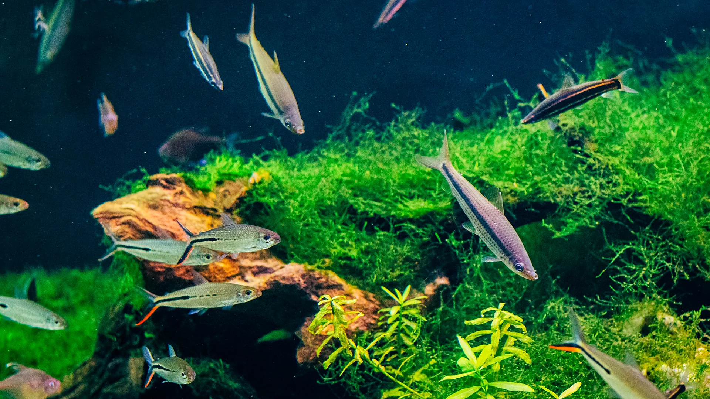
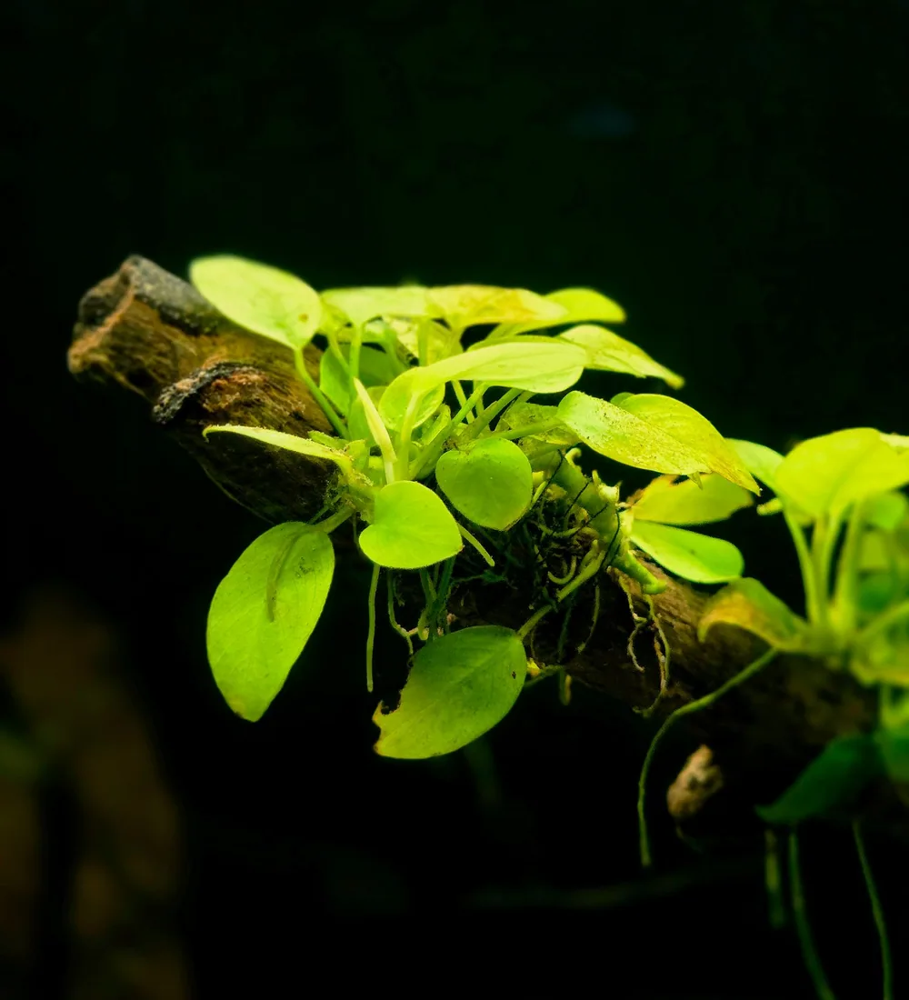

Работаем в г. Москва · культура in vitro · акваскейп
Меристемные аквариумные растения для красивого и здорового аквариума
Aquaklon выращивает качественные аквариумные растения для акваскейпа, домашних и профессиональных аквариумов.
О компании
Чистые растения для уверенного запуска аквариума
Aquaklon занимается выращиванием и продажей меристемных аквариумных растений. Такие растения развиваются в стерильных условиях, поэтому покупатель получает компактный, чистый и удобный посадочный материал без лишнего риска для аквариума.
Формат in vitro хорошо подходит для новых запусков, плотных растительных композиций и аккуратного акваскейпа: растения легко разделять на порции, высаживать группами и адаптировать под конкретный объём.

Почему меристема
Растения, с которыми удобно работать
Меристемные растения ценят за чистоту, компактность и предсказуемую посадку. Это практичный формат для аквариумистов, которым важен аккуратный результат.
Каталог растений
Популярные виды для аквариума и акваскейпа
Наличие и стоимость зависят от текущей партии. Напишите или позвоните, чтобы подобрать растения под освещение, объём и стиль композиции.
Живые композиции
Аквариумы, созданные из наших растений
Наши растения используют для создания густых, живых и выразительных аквариумных композиций с глубиной, цветом и естественной фактурой.
Как заказать
Простой путь от выбора до посадки
Отзывы клиентов
Растения хорошо доезжают, приживаются и смотрятся естественно
Контакты
Уточните наличие растений Aquaklon
Подскажем по ассортименту, посадке и выбору растений под ваш аквариум. Работаем в Москве.